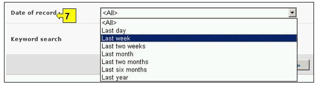

URL: http://bch.cbd.int/database/activities/
Under Article 22 of the Protocol, Parties are required to cooperate in the developing and/or strengthening of human resources and institutional capacity for the effective implementation of the Protocol. Through the BCH, Parties and others can access information about capacity-building and other assistance for implementation of the Protocol. In addition, governments can register their capacity-building needs and priorities in the BCH.
A search for information about capacity building can be accessed from the link on the Finding Information drop down menu on the navigation bar, or from the link in the left hand menu of the Finding Information page, or from the link in the Capacity Building text on the same page.

Figure 68
On the Search for information on Capacity-Building page the user can search for:
-
Biosafety Capacity Building Projects;
-
Capacity-Building Opportunities;
-
Country Needs and Priorities;
-
Biosafety Courses
On the Search for information on Capacity-Building page there are six search criteria boxes provided for refining searches in this database. Each of them has a drop down menu from which it is possible to select the required criteria. The default setting for each drop down menu is the first item at the top of the menu list. On the right side of each box, a button allows the user to activate multiple selections. Once in the multiple selection mode it is possible to add more criteria to the selection by clicking on the relevant criteria while pressing the Ctrl (Control) key.
There are eight search criteria boxes on this page.
.
Figure 69
Box 1 [Type of assistance] allows the user to narrow the search to countries or regions either requesting or providing assistance.

Figure 70
Box 2 [Select a country] lists all the country names in a drop down menu, so that users can select one or more specific countries for a search.

Figure 71
Box 3 [Select country group] lists country groups in a drop down menu so that users can select one or more specific groups of countries for a search. The country group list contains all major geographical or political groupings of countries and allows for narrowing the search to records submitted only by the members of the selected group or groups.

Figure 72
Box 4 [Capacity building category] allows the user to narrow a search to specific capacity building categories such as capacity building projects; capacity building opportunities; Country needs and priorities and/or biosafety courses.

Figure 73
Box 5 [Project, Opportunities, Needs and Priorities] allows the user to apply filters for various aspects of capacity-building activities in order to further narrow the search to records that are specifically related to the selected criteria. Filter categories are: (i) Project name, (ii) Capacity-building area, (iii) Status of the project, (iv) Type of implementing agency, (v) Organization and (vi) Source of funding
Selecting one or more filter criteria from the drop down menu opens additional search boxes with a drop down menu of options, each related to one of the selected filters. Multiple filters can be added by using the Ctrl (Control) key (i.e. by clicking on the relevant filter criteria while pressing the Ctrl key).

Figure 74
Box 6 [Training offered] allows the user to apply filters for thematic areas and/or type of accreditation in order to further narrow a search for records that are specifically related to the selected criteria.
Selecting one or more filter criteria from the drop down menu opens additional search boxes with a drop down menu of options, each related to one of the selected filters. Multiple filters can be added by using the Ctrl (Control) key (i.e. by clicking on the relevant filter criteria while pressing the Ctrl key).

Figure 75
Box 7 [Date of record] allows the user to narrow the search according to the date records have been registered in the BCH. The drop down menu provides a number of options for limiting the search to only those records submitted within the selected interval of timeframe (e.g. ‘last day’, ‘last month’, ‘last year’, etc.).

Figure 76
Box 8 [Keyword search] provides an opportunity for using keywords to narrow the search. The user can use standard keyword syntax (combination of AND / OR operators) to search with multiple words or core parts of words (e.g. “Import OR Export”). A search that is made by using keywords only produces results of records containing exactly the searched text and not possible synonyms that have not been inserted (i.e. a search with the single keyword “Maize” will produce a list of records containing the word “Maize” but not the words “Corn” or “Zea mays”).

Figure 77
The search page offers three buttons to produce a record list. The Search Now button (both at the top and bottom of the search interface) allows the user to activate a search based on the search criteria selected in the search facility boxes. The search results are sorted alphabetically by default according to country name. The Browse all records (at the bottom of the search interface) allows the user to obtain a list of all records in this database.

Figure 78
The Search Results pages have a sorting facility above the list of records. This can be used to sort the records according to criteria specific for that category of information. Note that the sorting criteria change when the user selects different search criteria.

Figure 79
Example. A user wishes to identify which capacity building projects have been completed in African countries. The user selects (i) CBD Regional Groups - Africa in the Geographical areas, country group box and (ii) capacity building project in the Capacity building categories box and Filter by status in the Project, Opportunity, Needs and Priorities box. Selection of the filter opens a Status box, in which the user selects, completed. Activating the Search Now button presents the search results ordered alphabetically according to country. Information about each of these activities can be accessed by selecting the name of the project.

Figure 80

Figure 81